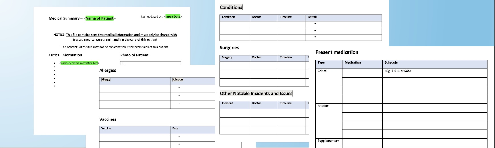

Your Health Summary
This is a meticulously structured document template used to create and maintain a concise snapshot of your health status. It isn't a long, winding medical history- it is a strategic summary designed to be reviewed by a doctor in under a minute.
This keeps your key conditions, medications, allergies, surgeries, and safety-critical details handy,
saving time, reducing errors, and making every doctor visit count.
Contact details are used to send you template improvements and updates.
Prefer downloading without sharing contact details? Get it on GitHub.

Note: examples are fictional and for illustration only.
What is this?
Simple structure. High leverage.
Health summary template (reviewable in ~1 minute)
A document template you maintain to keep a short and concise summary of your health status and history- structured so a doctor can skim it quickly.
- Best for: patients, relatives, caregivers.
- Also useful for: doctors to share with patients as a preparedness habit.
- Works globally: no country-specific assumptions.
What isn’t this
It is not a complete chronological / longitudinal health record structure. Think of it as a compact snapshot, not a full archive.
- It won’t replace your reports, prescriptions, or imaging, it complements them.
- It’s designed for fast review, not for storing everything.
Where it’s useful
This summary is designed to provide the most important information to a doctor in as little time as possible- especially during emergencies and busy visits. It reduces time spent reconstructing your medical history from memory, especially in stressful situations, and helps keep the appointment focused on the current complaint.
- Emergency rooms & urgent care
- Visits with a new doctor
- Complex cases with multiple conditions or medications
- Elderly care and caregiver handoffs
Why you should own this
Being organized improves the quality of care- not because doctors “favor” organized patients, but because ready access to accurate details enables better clinical decisions. With the essentials in front of you, the visit becomes a collaborative discussion instead of an interrogation.
- Fewer forgotten details
- Faster triage and safer prescribing
- More time spent on decisions, not recollection
For doctors & clinics: a zero-workflow way to improve history-taking
Share a link to this page (or QR) with patients at the end of a visit, in appointment reminders, or via your reception desk. Patients maintain it themselves, and you get a consistent, skim-friendly summary at the next visit.
How to maintain it
A lightweight habit that stays current
Simple maintenance routine
- Keep a digital copy in a backed-up location (cloud storage works well).
- Set a recurring reminder to review it (every 3 months is a good starting cadence).
- After updates, print a fresh copy and destroy older printouts.
- Share access with trusted family/caregivers so they always have the latest version.
What to include (rule of thumb)
When in doubt, include the detail. A bit of extra context is usually safer than omitting something important- especially allergies, medication changes, and past serious events.
- Allergies & adverse reactions
- Current medications + dose + schedule
- Major diagnoses, surgeries, implants/devices
- Clinician contacts for key conditions
FAQ
Clear answers, minimal fluff
What is this?
This is a document template that you can use to create and maintain a very short and concise summary of your health status and history- so a doctor can understand the essentials quickly.
What isn’t this?
This is not a chronological / longitudinal health record structure. Think of it as a compact snapshot, not a complete archive.
Where is this useful?
This summary is designed to provide the most important information to a doctor in as little time as possible. It reduces time spent reconstructing your history- especially during emergencies- and helps visits become more productive.
When you enter a meeting with your doctor with your information in order, the appointment becomes a collaborative discussion instead of an interrogation where the doctor struggles to pull relevant history from fragmented memory.
Why can’t my doctor do this?
Clinics are time-constrained. Maintaining an always-updated summary for every patient usually isn’t feasible. This helps you own a reliable snapshot without adding work to your doctor.
So can I stop maintaining my medical records or stop carrying my file every time?
No. This does not replace your medical records. It complements them by making the essentials quickly readable. Bring relevant reports when needed.
Is my medical data stored on this website?
No. This website only provides the template. We do not store, see, or have access to any medical information you enter into your downloaded template. You store the document wherever you like. Your privacy remains entirely under your control.
Should I show this to my doctor on my phone or a printout?
Print is king. A digital copy is a great backup, but a printout lets a doctor scribble notes, highlight sections, and keep it in view during the examination without screen locks.
How do I maintain this?
Keep a soft copy in a place that’s backed up (cloud storage is a good option). Maintain a recurring calendar reminder to review and update it regularly (every 3 months is a good frequency).
Every time you update, print a new copy and destroy previous copies. Share with close family members, friends, and caregivers so they always have the latest version.
Is this template valid globally?
Yes. The terminology used (Allergies, Medications, Comorbidities, etc.) is based on standard international medical nomenclature recognized by healthcare professionals worldwide.
What if I have multiple family members?
Maintain a separate document for each family member. This preserves clarity during emergencies and helps prevent dangerous mix-ups, especially around medications and allergies.
I am a doctor. How can I use this with my patients?
Share this page link (or the QR code) during a first visit or in appointment reminders. Ask patients to bring a filled summary next time—this reduces admin back-and-forth and improves history quality for clinical reasoning.
I am a caregiver for an elderly patient. Is this for me?
Absolutely. Caregivers often need to relay complex histories under pressure. This document helps ensure nothing important is missed, even if you weren’t present for the previous consultation.
Have a suggestion or want to contribute improvements? Send feedback.